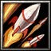
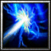
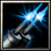

- 主要屬性 智慧
攻擊範圍 128
- 基礎護甲 4
基礎攻速 1.8
- 基礎攻擊 130 - 154
基礎跑速 300
戰國時代最著名的基督教大名，本名大友義鎮，號宗麟，教名是方濟各。二十一歲時討平謀殺其父義鑒的田口、津久見等家臣，繼任家督，不久便趁著陶氏篡奪大內氏實權，把原屬大內氏的豐前和築後收入掌中。毛利元就滅亡陶晴賢後，發兵往北九州爭奪大內氏原領，與宗麟連番惡戰，最終在博多決戰中，大友氏贏得了勝利。當時九州地區逐漸形成大友、 龍造寺和島津三大勢力，而以大友氏勢力最為廣大。宗麟四十二歲時皈依基督教，隨即統率四萬五千大軍南征島津，但在耳川戰敗，幾乎一蹶不振。他被迫向豐臣秀吉求援，才終於保住了在豐後的本領地。
標記一個(650/700/750/800)距離的目標敵人，在標記的持續時間內將可以獲得該敵人的視野，並且使「導彈發射!」技能變為鎖定該目標發射。
標記效果將在自身跟目標敵人超過1000距離時自動失效。
技能等級與「導彈發射!」相同。
-

-
W
導彈發射!
-
35/50/65/70
-
2
對周圍的敵人發射導彈，造成(100/200/300/400)範圍傷害，若是鎖定敵方目標，則改為朝被標記的敵人發射一枚自動追蹤的定位導彈，若該敵人連續被擊中2次將會暈眩1.5秒。
-

-
E
空間撕裂裝置
-
120/140/160/180
-
11
(被動)
永久增加智慧(5/10/15/20)。
(啟動)
往所面對方向傳送600距離，若是路徑上撞到敵人將會停下並釋放(100/200/300/400)範圍傷害，同時使自身獲得最多10秒的脈衝護盾，可吸收等同智慧*5的傷害。
-
-
R
光學遮罩
-
150/150/150/150
-
23/20/17/14
指定自身或全戰場任一友方目標獲得光學效果使之隱形，視施放距離來決定隱形的持續時間，400距離內將可以隱形4秒，若超過400距離，每100距離將使持續時間縮短0.2秒，最短可以維持1秒。 攻擊或是施放技能會使隱形提早結束。
若施放目標為自身，可額外恢復(0/150/300/450)生命。
冷卻時間隨技能等級提升降低。
-

-
T
殲敵光線
-
275/300/325
-
140/120/100
啟動兩段式殲敵光線，第一段會朝面對方向每0.22秒放射四道殲敵光線，每道殲敵光線造成(100/160/220)傷害，總共放射5次後結束進入第二段。
第二段會朝面對的方向每0.33秒放射2道殲敵光線，造成的傷害等同第一段，放射24次後結束。
學習等級為6/12/18，冷卻時間隨技能等級提升降低。
永久性的提升(3/6/9/12)靈活、智慧和力量。